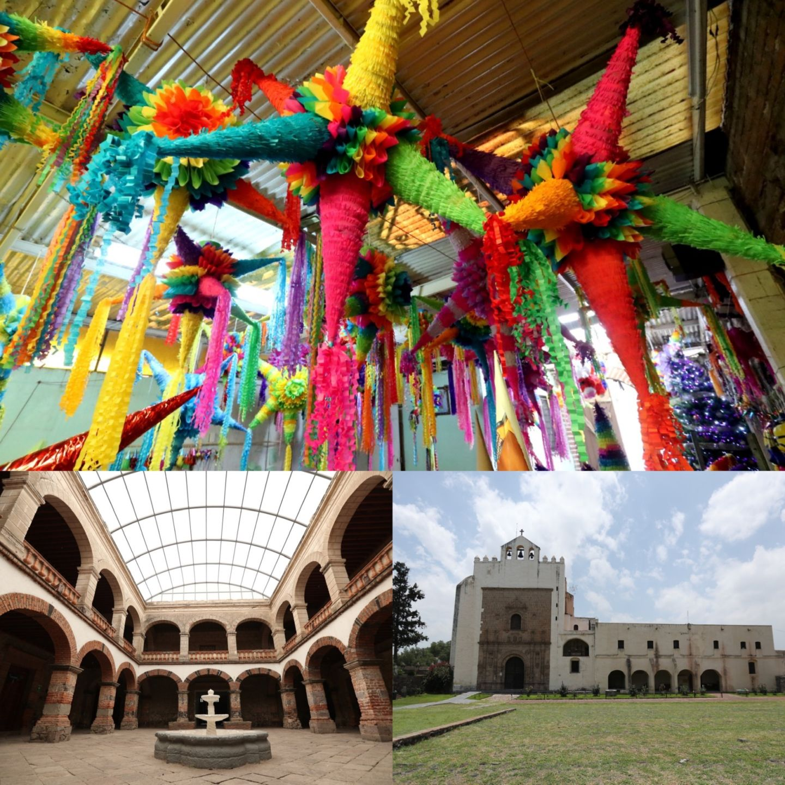

Acolman de Nezahualcoyótl (en náhuatl, Acolman) o más conocido como San Agustin Acolman es una población Mexicana y la cabecera del municipio de Acolman, ubicada al centro del municipio. Fue una localidad náhuatl, y actualmente es un pequeña ciudad en
crecimiento dentro del Estado de México.
Aquí no son necesarios los trazos de calles ni las grandes plazas o edificios; pues la naturaleza se ha encargado de darle el encanto de sus amplios llanos y la frescura de la vegetación que lo rodean; convirtiéndola así en un lugar digno
de ser visitado
La fundación de Acolman en el siglo XIII se atribuye a los acalhuas, uno de los siete pueblos chichimecas. Después de algunas dificultades, logró convertirse en un pueblo importante en el reino de Nezahualcóyotl. Al llegar los españoles, Acolman era gobernado por Xocoyotzin. Durante la repartición de encomiendas, Pedro de Solís de los Monteros se quedó con Acolman, que fue heredada a su hijo Francisco de Solís.
Actualmente la cabecera municipal lleva el nombre de Acolman de Nezahualcóyotl y su actividad económica se basa en la agricultura, fruticultura, ganadería e industria.
El nombre Acolman proviene de la palabra náhuatl ocumáitl y aculli, que significa "hombre con mano o brazo".
Acolman es conocida como la cuna de las piñatas, una artesanía que se remonta a más de 400 años. Se dice que las piñatas se inventaron en el ex convento de San Agustín de Acolman para hacer más atractivas las posadas, que se originaron en las misas de "aguinaldos" del 16 al 24 de diciembre. En diciembre, se celebra la Feria de la Piñata, donde los habitantes de la zona crean sus propios diseños y se premia a la piñata más grande y original
Helmut de Terra descubrió el Hombre de Tepexpan a 1,07 m de la superficie utilizando una técnica geofísica. En su informe preliminar, de Terra afirmaba que los huesos y el cráneo indicaban que la persona era masculina. Sin embargo, una leyenda dice que el valiente cazador se convirtió en mujer.